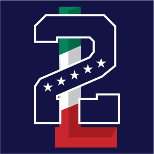
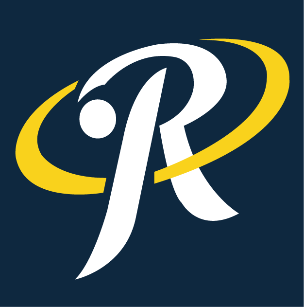
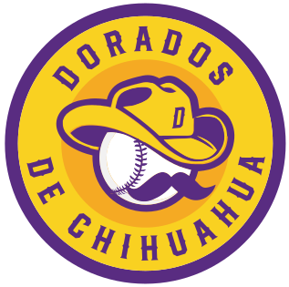
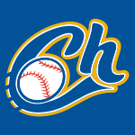

Equipos de la Zona Norte
Conoce a los equipos que forman parte de la Zona Norte y descubre su historia, estadio, jugadores y estadísticas.

Sultanes de Monterrey
Uno de los equipos con mayor tradición del béisbol mexicano, representando a la ciudad de Monterrey, Nuevo León.

Acereros de Monclova
Equipo representante de Monclova, Coahuila, conocido por su tradición y afición dentro del béisbol mexicano.

Saraperos de Saltillo
Equipo de Saltillo, Coahuila, con una larga historia dentro del béisbol profesional mexicano.

Algodoneros del Unión Laguna
Representantes de la Comarca Lagunera, con sede en Torreón, Coahuila.

Tecos de los Dos Laredos
Equipo que representa a la región de los Dos Laredos, con presencia a ambos lados de la frontera.
Toros de Tijuana
Equipo de Tijuana, Baja California, protagonista de la Liga Mexicana de Béisbol.
Caliente de Durango
Representante de Durango dentro de la Liga Mexicana de Béisbol.

Rieleros de Aguascalientes
Equipo de Aguascalientes con una importante tradición dentro del béisbol profesional mexicano.

Dorados de Chihuahua
Equipo que representa al estado de Chihuahua dentro de la Liga Mexicana de Béisbol.

Charros de Jalisco
Equipo de Guadalajara con presencia en la zona norte durante la temporada 2026.